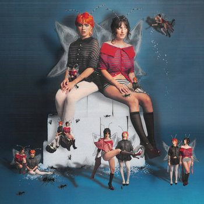

The Army, The Navy : Fairies Make Music Too!

Album 4
These articles are mostly interviews with artists I really enjoy. I always like to introduce them with some connexion to my life, because I’m very selfish.
My hope is to give smaller artists the same depth and intentionality we automatically grant to more established ones and potentially carry thoughtful conversation about doubt, craft, childhood obsessions, failed projects, strange ambitions.
I think these interviews are also an opportunity for them to sit with their work being perceived for the first time. So maybe Pink iPod will become an archive !
And yeah, practically speaking, they’re more likely to answer my emails.
A few things I try to keep in touch with :
NO GATEKEEPING, NO AI WRITING, RECOGNISING THE COMMUNITIES WHICH FORM ARTISTS, ACKNOWLEDGE AND ASK ABOUT THEIR MATERIAL CONDITIONS, STAY CLOSE TO THE HEART.

The Army, The Navy : Fairies Make Music Too!
Album 4